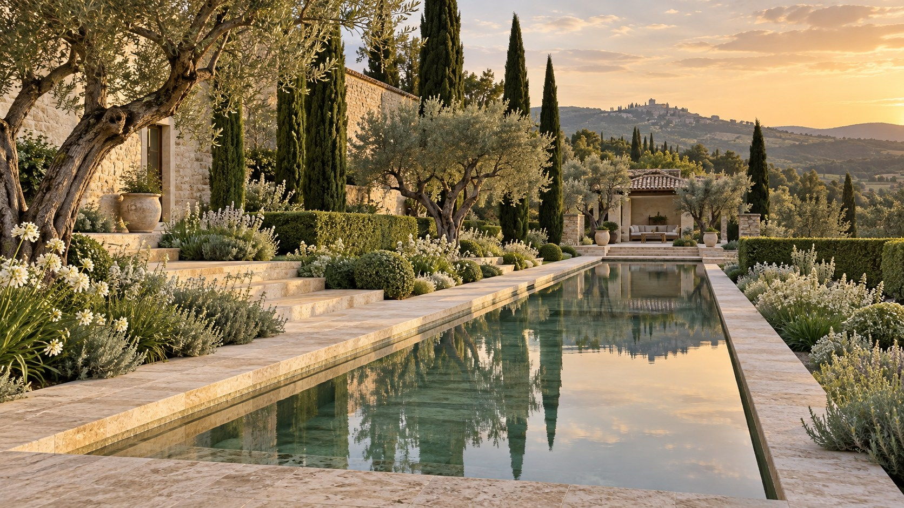

KONCEPCJA
OGRODU
Pierwszy, spójny obraz miejsca. Układ przestrzeni, proporcje, atmosfera i relacja ogrodu z architekturą.
IDEA · KOMPOZYCJA · KIERUNEK
MIEJSCA TWORZONE Z UWAŻNOŚCIĄ

O STUDIU
Najciekawsze miejsca powstają tam, gdzie kończy się pośpiech, a zaczyna uważność.
TERREN to pracownia architektury krajobrazu. Interesuje nas ogród jako naturalne przedłużenie domu — przestrzeń, która ma własny rytm, charakter i sposób bycia. Zaczynamy od miejsca. Jego światła, proporcji, drzew i tego, co już w nim istnieje.
Łączymy porządek architektury ze swobodą natury. Lubimy materiały, które pięknie się starzeją, rośliny, które zmieniają się z porami roku, i rozwiązania, które pozostają aktualne długo po pierwszym zachwycie.
POZNAJ NASZE PODEJŚCIE↗ZAKRES WSPÓŁPRACY
Każdy ogród potrzebuje innej drogi.
Wybieramy tę, która ma sens dla Twojego miejsca.
Pierwszy, spójny obraz miejsca. Układ przestrzeni, proporcje, atmosfera i relacja ogrodu z architekturą.
IDEA · KOMPOZYCJA · KIERUNEKPrzekładamy pomysł na szczegóły. Opracowujemy ścieżki, tarasy, strefy odpoczynku i rozwiązania do realizacji.
FUNKCJA · DETAL · DOKUMENTACJADobór zieleni i naturalnych faktur. Myślimy o świetle, sezonowości, warunkach miejsca i pielęgnacji.
NASADZENIA · FAKTURY · SEZONYTowarzyszymy projektowi na etapie wykonania. Pomagamy zachować jego charakter w materiałach, roślinach i detalach.
KONSULTACJE · SPÓJNOŚĆ · JAKOŚĆ
PRZESTRZEŃ NA CODZIENNOŚĆ
NASZE PODEJŚCIE
Dobra współpraca zaczyna się od rozmowy. Przechodzimy od pytań do decyzji — spokojnie, krok po kroku.
Poznajemy Twoje potrzeby i czytamy krajobraz. Przyglądamy się temu, jak żyjesz i jak chcesz korzystać z ogrodu.
Tworzymy koncepcję, która porządkuje przestrzeń i buduje jej atmosferę. Rozmawiamy o proporcjach, funkcjach i materiałach.
Dopracowujemy projekt i dobór roślin. Ustalamy kolejne kroki, aby pomysł mógł stać się żywym, dojrzewającym ogrodem.
WARTO WIEDZIEĆ
Już na etapie projektu domu lub planowania zmian na działce. Wspólne myślenie o architekturze i ogrodzie pozwala lepiej połączyć wnętrze z otoczeniem. Istniejący ogród również może być dobrym początkiem.
Zdjęcia miejsca, przybliżoną powierzchnię, plan działki, jeśli go masz, i kilka słów o swoich potrzebach. Inspiracje są pomocne, ale równie ważne jest to, jak chcesz spędzać czas na zewnątrz.
Projektujemy kompozycje, które mają coś do zaoferowania w każdej porze roku. Zimowa struktura drzew, zieleń krzewów, kwitnienie i jesienne faktury tworzą różne odsłony tego samego miejsca.
TWÓJ NASTĘPNY KROK
Opowiedz nam o miejscu, które chcesz zmienić.
Resztę odkryjemy wspólnie.